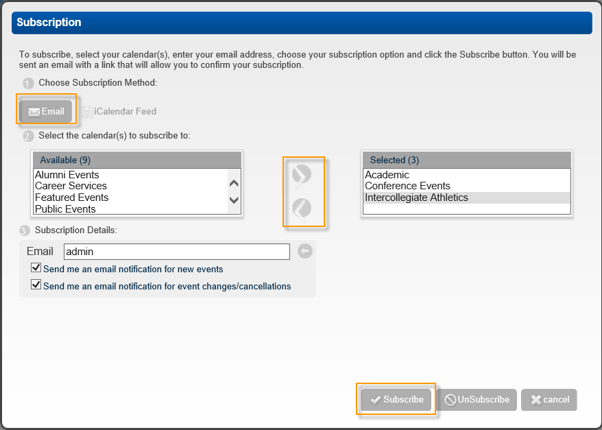

Subscribe to a Calendar Using Email
Once you have begun the process of subscribing to a calendar, you can subscribe using email as follows. See Also: Subscribe to a Calendar.

- If you are a guest, enter the email that is to be used for your subscription in the Email field. Optionally, as a user, you can edit this email address if needed.
- Select one or both of the options that are available for email subscriptions—email notifications for new events and email notifications for changes and cancellations.
- Click Subscribe. A message confirms that an email has been sent and prompt you to confirm your subscription request.
- Click Done to close the message and return to the Calendar Display page.